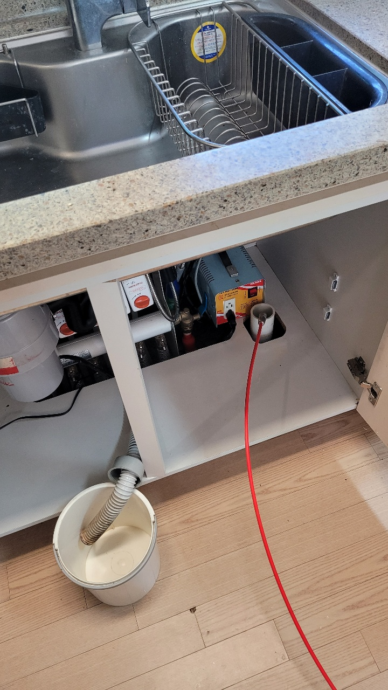
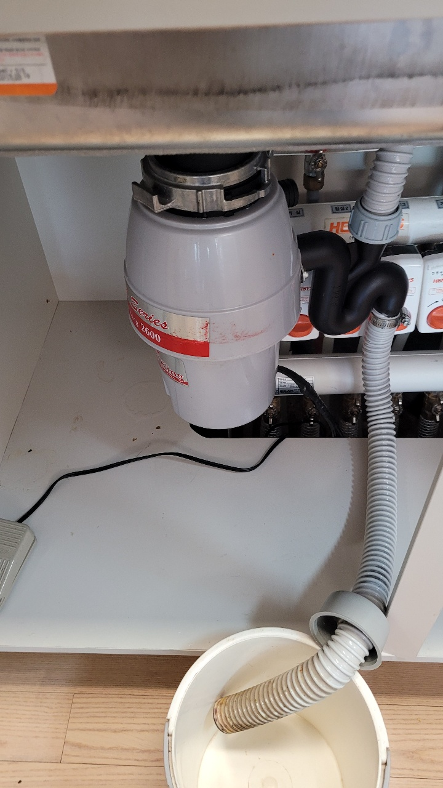
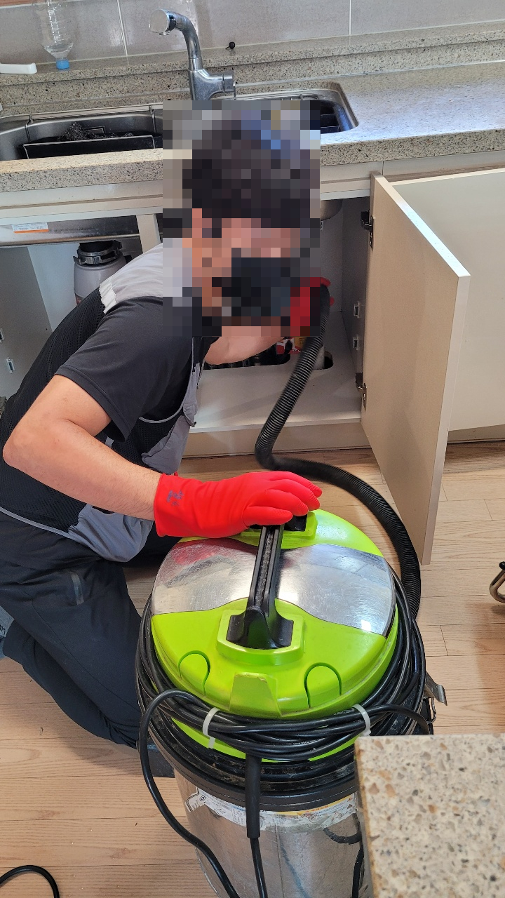
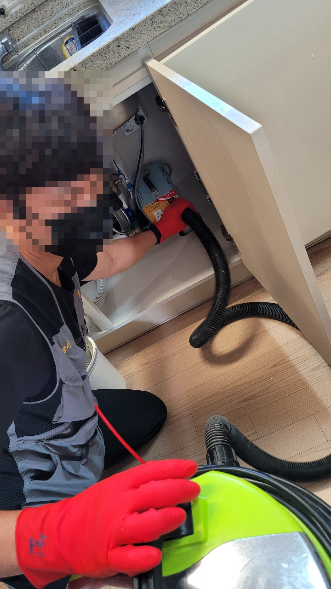
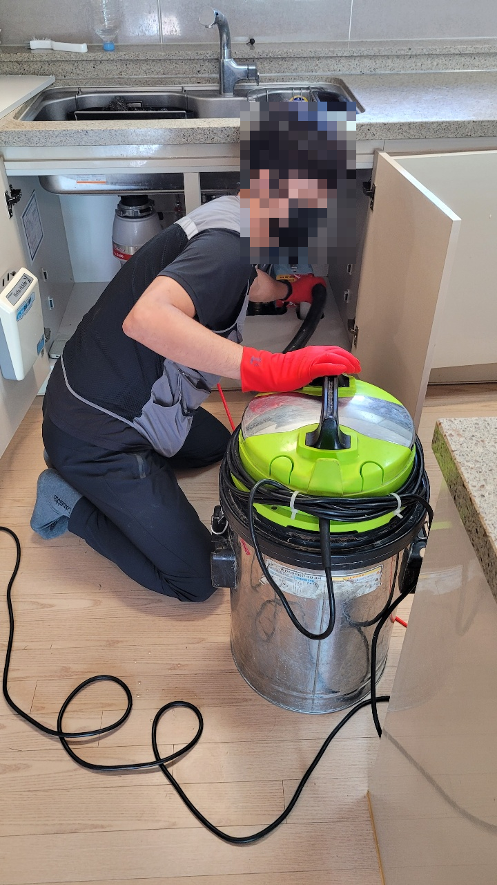
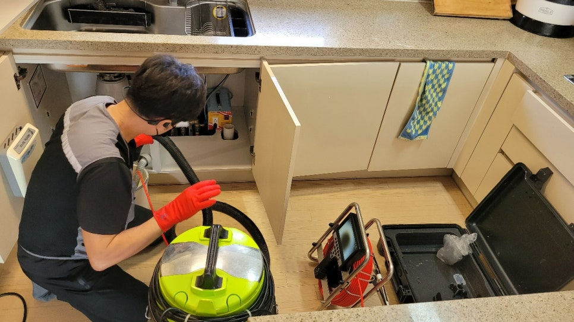

🏠 화성 음식물분쇄기 싱크대막힘 해결현장
화성 싱크대막힘 전문 시공 후기

📋 작업 개요
- 위치: 화성
- 서비스 유형: 싱크대막힘, 하수구막힘, 배관막힘, 뚫는업체, 고압세척
- 작업 일시: 2021. 9. 28. 20:55
- 업체명: 하수구수사대 (010-5615-2118)
🔍 문제 상황
안녕하세요 ㅎㅎ
화성 음식물분쇄기 싱크대막힘 현장을
해결하러 오늘도 출동한 하수구수사대 입니다.
저희 업체는 아파트, 빌라, 주택, 상가, 공장 등
각종 배관막힘, 뚫음, 고압세척, 언수도 해빙
등 종합적으로 해결 가능하며
서울, 경기, 인천 전지역 출장 가능한 토탈업체 랍니다.
이번 화성 음식물분쇄기 싱크대막힘 현장 작업사례로
살펴보실까요.
주방 싱크대에 문제가 생겼다고하면
10중에 8은 음식물분쇄기 문제가
가장 많다고 볼수 있습니다.
요즘 대부분의 가정에 음식물분쇄기는 필수로
많이 사용하고 계시지만
평소에 주의를 가지고 사용해야

🔎 원인 분석
💡 전문가 진단: 정밀 진단 장비를 사용하여 슬러지의 고착 여부를 판명하고 타격/세척 작업을 실시했습니다.
이런 문제가 발생하는 일을 막을수 있답니다.
음식물분쇄기를 사용하면
굳이 밖으로 나가지 않아도
음식물 찌꺼기가 처리되니
냄새도 줄여주고 벌레 꼬이는것도 없어서 좋지만
갑자기 한순간에 고장이나거나 막힘현상이
발생할수있다는 단점도 가지고 있어요
문제가 발생하면 즉시 작동을 중지하고
업체를 불러서 해결하시는 것이 가장 좋은방법입니다.
섣불리 음식물찌꺼기를 제거하다가 갑자기 작동하여
사고가 발생할수 있고, 배관이 터져 물이넘치는
상황도 발생할수 있기 때문에
반드시 전문가를 불러서 해결 하시는 것이
가장 안전하고 깔끔하게 해결하는 방법입니다.
화성 음식물분쇄기 싱크대막힘 현장을 해결하기위해

🔧 작업 과정
하수구수사대를 불러주셨습니다.
정말 많은 음식물과 이물질이 보이죠??
평소 음식물의 크기가 크다면 음식물을
잘개 쪼개서 음식물분쇄기 작동하는데 부담되지 않게
사용해주시는게 좋답니다.
또 너무 건조한것보다 물기가 있는상태에서
부드럽게 갈리기때문에 작동시키기 전에
물을 틀어놓고 잔여물과 함께 흘러가게 하는것이 가장 좋답니다.
많은이들이 아는 내용이지만 실천하기 어렵고
쓰다보면 방심해져서 대충 넘기시면
이런문제가 발생할수 있지만 평소에 조금만 주의해주시면
사전에 예방할수 있답니다.
평소 음식물분쇄기를 사용하실때
다량의 음식물이나 이물질이 한번에 많이 들어가게되면
무리가 되어 잦은 고장이 발생할수 있으니
꼭 주의해서 사용해야해요.
화성 음식물분쇄기 싱크대막힘 현장
해결하는데는 한시간이 채 걸리지 않는답니다.
화성 음식물분쇄기 싱크대막힘 현장을 해결하기 위해
카메라로 내부를 들여다보니
정말 많은 이물질과 음식물들이 있었는데요.
하수구와 싱크대 배관을 일차로 분리하고
내부에 있는 찌꺼기를 석션기로 빨아들이는 작업을 진행했습니다.
화성 음식물분쇄기 싱크대막힘 현장도


✅ 작업 완료
석션이라는 장비로 이물질을 흡입하여 해결하였습니다.
평소에 위에 알려드린 방법대로 사용해주신다면
오래동안 잔고장 없이 사용할수 있으니 주의해주세요.
서울 경기 싱크대 막힘 현장 어디든 하수구수사대가 출동합니다.
오늘도 믿고맡겨주신 고객님께 감사합니다
항상 믿음으로 보답하겠습니다. 언제든 연락주세요~~^^




⚠️ 주방 싱크대 배관 막힘 예방 수칙
- ✅ 기름기가 묻은 식기나 프라이팬은 설거지 전 키친타올로 반드시 기름때를 닦아내세요.
- ✅ 주기적으로 싱크대 개수대에 뜨거운 물을 가득 받아 한 번에 내려 배관 내부 기름을 씻어내세요.
- ✅ 배수구 거름망을 미세한 필터로 사용하시고 음식물 찌꺼기가 틈으로 새어 들지 않게 관리하세요.
- ✅ 베이킹소다와 식초를 뜨거운 물과 함께 일주일에 한 번씩 부어주면 배관 살균과 막힘 예방에 좋습니다.
💡 핵심 정리
- 확실한 장비 작업(내시경 점검 및 샤프트 스케일링)으로 원인을 뿌리 뽑습니다.
- 작업 후 1년 이내에 동일한 부위 재발 시 100% 무상 A/S 서비스를 보장합니다.
- 서울 · 경기 · 인천 전 지역에 24시간 언제든 긴급 출동할 수 있도록 항시 대기 중입니다.
❓ 자주 묻는 질문 (FAQ)
🚨 화성 싱크대막힘 문제로 고민이신가요?
정확한 원인 진단과 확실한 시공으로 재발 없는 해결을 약속드립니다.
24시간 긴급 출동 | 서울 · 경기 · 인천 전지역 | 1년 내 재발 시 무상 A/S